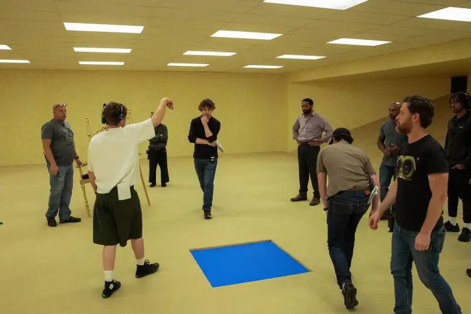
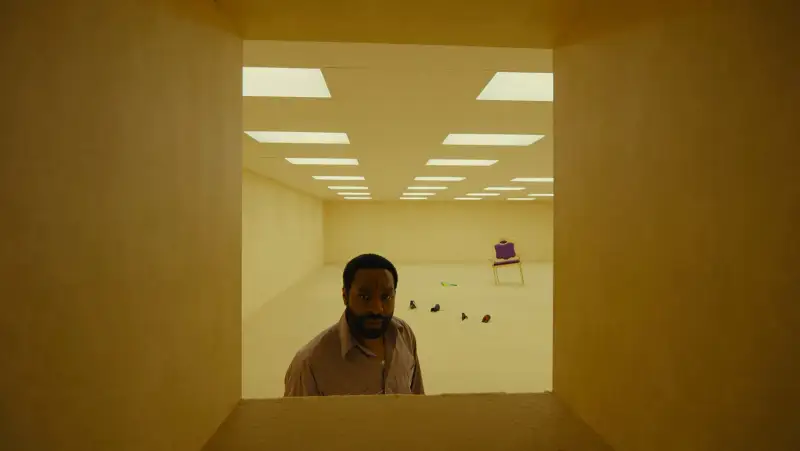
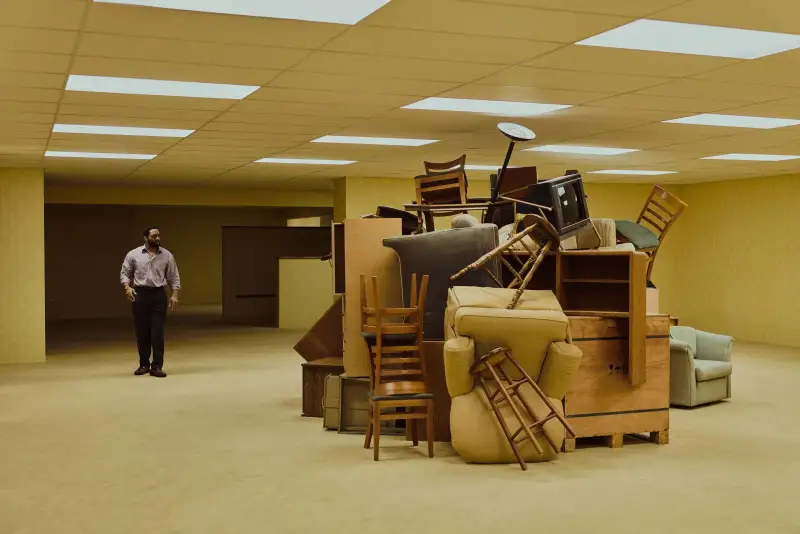
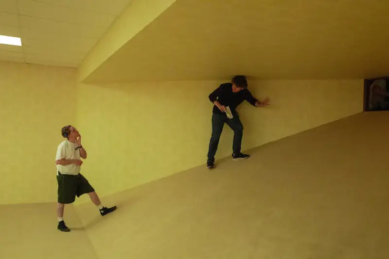
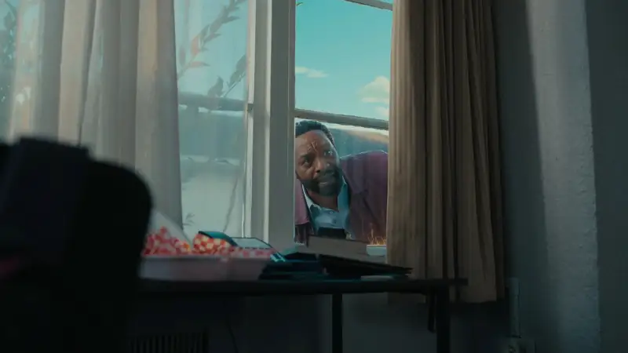
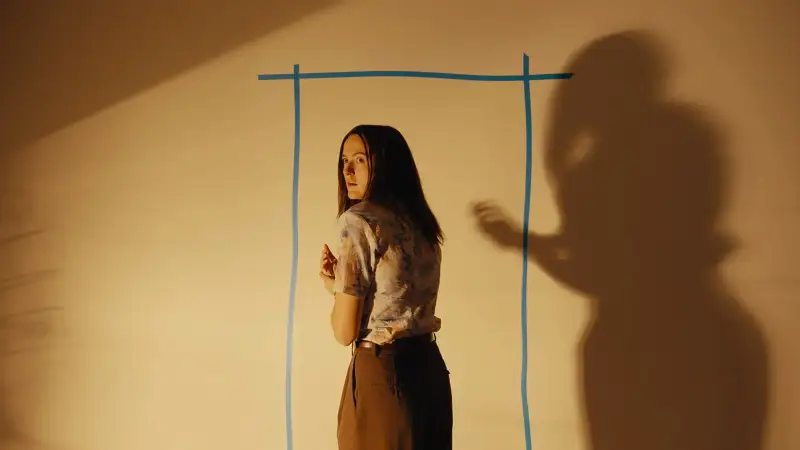
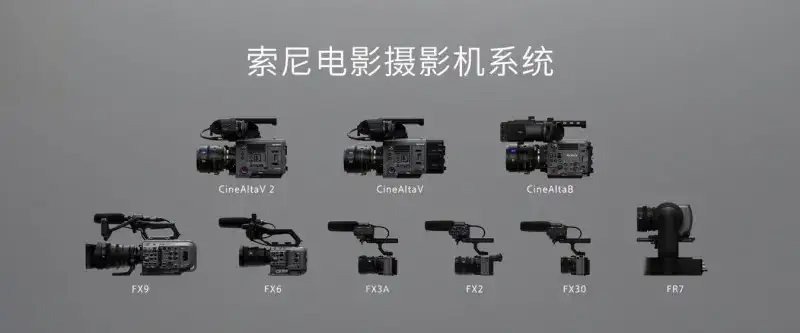

The film version of The Backrooms opened in domestic theaters on June 26. The series, which became popular on YouTube, has now reached 84 million views. On the surface, the Backrooms are empty and unknown, a fictional space. In the imagination of countless creators, it has also become a byword for anxiety and trauma, and it is constantly remade. This twisted, unsettling concept inspired the young filmmaker Kane Parsons. He worked with director of photography Jeremy Cox (whose work includes Keeper), and shot the film with the Sony CineAltaV 2 and the RIALTO mini extension as his core tools. The film version of The Backrooms came out of this.
This interview talks at length with DP Cox. We learn how he built the film's visual language on a sense of reality, and how the CineAltaV 2 supported his creative choices. He built the hyperdimensional space of the Backrooms on an image texture rooted in reality, so the two worlds connect naturally.

Starting from Reality, Exploring Hyperdimensional Space
The Backrooms began as a YouTube series that Kane Parsons made almost entirely in Blender. The original used a strict first-person point of view. So the first creative challenge for Cox was how to bring this visual language to the big screen.
The core is the first-person view, a highly subjective way of seeing, Cox said. Films usually use a more omniscient view, and let the audience see some information ahead of time. But in the original material, Kane's YouTube series, a key point is that everything the audience sees must match what the character is going through at that moment.
It is a very interesting challenge. To build everything around a subjective view directly affects the storyboard. You either look at what the character is looking at, or you watch the character go through it all. Under these rules, the shot design takes shape on its own.

To set the visual base of The Backrooms, Cox used a reality-based approach. He first let the film rest on a felt, tangible sense of the real, and then explored the hyperdimensional texture of liminal spaces.
First it must feel real, concrete, and touchable. I think this is always the best way into a film's world. Does it feel like a place that really exists, or could exist? Cox said. Once this world becomes touchable, the images also become interesting.
Instead of piling on layers, I always try to subtract. I try to remove anything that sits between the audience and the subject.

Capturing the Spatial Skeleton of The Backrooms
Although the world of the Backrooms grew from the shared work of many creators, Parsons's version expanded it into a film universe. It has specific characters, a faceless corporation, and monsters hidden in the horror of liminal spaces.
The original series was made in Blender, and the film continued this path. The set, built to show the hyperdimensional environment, had no removable walls. Actors and crew could enter only through a few openings. This also strengthened the feeling that the characters were trapped inside. Strange corridors and doors of the wrong size also made the shoot unusual. Cox needed a camera that could act like a camera node in Blender, so he chose the Sony CineAltaV 2 with the RIALTO mini extension.
What I really value about the Sony CineAltaV 2 is its great flexibility, Cox explained. It has built-in ND filters in full stops. It can run in RIALTO mode, and it has dual native ISO. We used all of these again and again on the shoot.
What draws me to the mini extension is that it lets you treat the camera position like a node. Just like in Blender, where you can put the camera anywhere. The way you use the split body is very similar to how you place a camera in Blender. You can put the camera right against a wall, or push it into a corner, Cox went on. So we often planned unusual camera positions in advance: wedging the camera in a corner, or putting it on the floor and shooting up. With the mini extension, we could really get these shots. We did not have to worry about the back of the camera or the battery hitting the floor, and we did not have to cut holes in the floor, ceiling, or walls. It pairs perfectly with the way we previsualized in Blender, and it let us bring that workflow into the actual shoot.

The spaces inside the Backrooms take different forms. There are open offices filled with all kinds of clutter. There are also small square tunnels barely wide enough for one person, and even a swimming pool. With the CineAltaV 2, Cox could switch the camera to handheld work as each scene needed, or use a monopod in tight spaces.
“In those long tunnels, we used a toothpick camera rig, Cox said. The film has some very long square tunnels that Clark has to crawl through. We used a section of truss with a Camera Revolution Libra stabilized head, put the CineAltaV 2 on the end, and pushed the whole rig along the tunnel. This let the camera move through these narrow tunnels as if floating.
The design and build of the Backrooms also posed a special challenge for composition. For this, Cox used a set of Zeiss Supreme Prime lenses to shoot the spaces, while keeping the lenses' own style from overpowering the frame.
We wanted a stable image texture, and we did not want any distortion from the lens. So the Supreme primes were the natural choice. They cover a wide range of focal lengths, are light, are fast, and have a stable character, Cox explained. We also tested other lenses with more character, but they looked a bit odd. Their own style stood out too much and fought the image. The Backrooms space is so large, plain, and highly uniform that any effect from the lens becomes obvious, such as tonal falloff, color shift, or changes at the frame edges. I do not think that helps the audience truly enter the space.
Every shot inside the Backrooms uses an 18mm lens or wider, and shots outside the Backrooms basically use 25mm, 28mm, or longer, Cox added. The interesting thing is that once you enter the Backrooms, a 14mm looks quite normal. The whole environment is so uniform that you do not see the cues that tell you the scale of the space. So you can safely use even wider focal lengths.

The limits of the set were only one of the challenges Cox had to overcome. Outside the Backrooms, the changing exposure conditions and limited lighting resources required the CineAltaV 2 to be flexible enough to react quickly to what happened on site.
Built-in ND filters in every stop make the shoot very efficient. I always wanted to keep the aperture between T2.8 and T4. I could reach the exposure I needed fast, without waiting for someone to swap filters. This neatly reduces the interference between the camera and the subject, and avoids extra glass or a matte box adding more in front of the lens, Cox explained. I found that when there are gaps between ND stops, you always get stuck: do you send someone to change the ND and slow the whole shoot? Or if the sun comes out from behind a cloud, the exposure sits between two stops and you cannot choose.
For the night shoots, to keep the sense of reality the film had built, the dual native ISO of the CineAltaV 2 let Cox turn the limits of the lighting into a creative choice. At ISO 3200, the practical lights could fully do their work in the frame.
We had no crane or lift on this shoot, so all the night lighting had to happen on the ground. I relied heavily on the higher native ISO, Cox said. For all the night scenes, we used ISO 3200. Some shots used a zoom lens, so the aperture was not that wide. But with ISO 3200, we could still get the shot. A smaller crew could use small LED fixtures on the ground to build the mood of this world in the film.
I think the biggest benefit of using a higher ISO at night is that the weak practical lights in the environment are still kept, Cox went on. If you use larger cinema lights, they can overpower the light already there on site, and you lose the subtle layers and detail that the place already had. So we return to the reality-based approach: it is important that the light already on site carries the same weight as the lights we added.
What surprised me most was how well the high native ISO performed. In terms of the density of the image, I usually worry that a higher ISO will make the image feel thin. But in the color grade, once we added back the contrast, the image became quite solid. It impressed me deeply, and I will rely on this more in future.

Image: A24
True to Reality
For a film like The Backrooms, which breaks reality and reshapes how the audience perceives it, the moments at the border between the real and the unreal are especially key. For Cox, these moments not only link the two worlds. They also strengthen the reality-based approach in his visual language, so that the hyperdimensional environment Parsons built enters the real world we know.
My proudest moment is when Clark first sees the crack that leads to the Backrooms. The audience watches him notice the crack and walk in, and we follow him on the journey, Cox shared. When I read the script, this scene was always a key one in my mind. The final result is exactly what Kane and I imagined. It is a very rewarding scene.
About the Sony Cinema Line

The Sony Cinema Line
Sony has long worked to use innovative technology to faithfully capture the creator intent. With broad experience in film and video production, Sony offers a rich, efficient creative camera system to meet the many needs of high-quality filmmaking. The Sony Cinema Line centers on the CineAlta series. It includes the digital cinema cameras CineAltaV, CineAltaV 2, and CineAltaB, which are widely praised in the industry. It also includes the full-frame cinema camera FX9, popular in documentary and TV drama work, the full-frame PTZ camera FR7, the FX6 for flexible creation, the compact and portable FX2 and FX3, and the FX30, the first Sony cinema camera for young people.